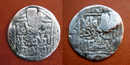
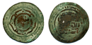

Welcome
In 1206 the Great Khuruldai of all Mongol Lords was held at the start of the Onon river to unite Mongol provinces and small tribes into one nation of Mongol Statehood. At this Khuraldai Temujin was declared as the Great Khagan of Mongols and given the name of Chinggis Khan. This year celebrates the 800-th anniversary of the declaration of Mongol Empire. I’ve been working on a website of Mongolian coins and paper banknotes of all times and targeted its release to this commemorative date. The term Numismatic does not only relate to a small group of people with a hobby to collect coins and banknotes but it also refers to the history, politics, economy, language and culture, and even science of any given country. It is a much broader subject than a lot of people seem to think. That is why so much time, attention and effort are invested in to this subject. The importance of Numismatic has earned it the status of a separate subject of science to study. In many countries the coins and banknotes of the past are stored in museums and treasured as national historic items. On my website the coins and banknotes are divided into two main categories: ancient and contemporary. Among the ancient historical valuables a special emphasis should be made to the coins and banknotes of XIII-XIV centuries. These coins and banknotes are unique in their shape and style, they have specific writings minted on them and they were used throughout the vast lands. Undoubtfully, they cover a lot of world history of their own time and hence are subjects of interest to many numismatics and historians alike. Hundreds of publications worldwide are devoted to the research of these coins and banknotes. Several valuables of Mongolian Numismatics can be found in museums of Russia, China, England, Germany, USA, Taiwan, Uzbekistan, Georgia, Armenia, Turkey and other countries. For example, Yapi Kredi Bank of Turkey and El Khalifa Bank of Saudi Arabia have a treasure collection of beautiful and rare coins of Mongol Empire. Lately, a lot of attention has been generating on the Clan Tamghas minted on the coins of Mongol Empire. I’ve worked on this website with one goal in mind: to promote and boost the research and study of Mongol Empire coins and banknotes. I hope my work serves as a humble contribution to this great topic waiting to be explored, brought out and admired upon. I also hope that this website can become a place where one can not only get some information but can also add new and share his/her opinion with the rest of us. Since this website is the first of its kind I understand there are going to be some adjustments made and some information edited. Any comments or concerns from you are greatly encouraged. In fact, I hope your comments and concerns will help me make this website a very useful and enjoyable one. I will try my best to keep it up to date. Sincerely yours, Nyamaa Badarch
|
 |
1206 онд Онон мөрний эхэнд Монголын ноёдын Их Хуралдай болж, олон монгол овог аймгийг нэгтгэсэн Монголын Тулгар Төр улс байгуулагдсаныг зарлан тунхагласан билээ.Энэ Хуралдайгаар Тэмүжинг бүх Монголын Их эзэн хаан хэмээн өргөмжилж түүнд Чингис Хаан цол өргөжээ. Ийнхүү Монголын Эзэнт Улс байгуулагдсаны 800 жилийн ой энэ жил тохиож байна.Би энэ их ойн өмнө Монголын бүх үеийн зоосон ба цаасан мөнгөний тухай томоохон хэмжээний вебсайт хийж гаргахыг зорьсон юм. Энэхүү вэбсайт д орсон мэдээллүүд нь эртний ба орчин үе гэсэн хоёр үндсэн хэсэгт хуваагдана. Монголын эртний түүхийн дурсгалуудын дотор ХШ ХIV зууны Монголын нумизматикийн дурсгалууд томоохон байр суурь эзлэх ёстои юм. Энэ үеийн Монголын зоосон мөнгө өөрийн хэлбэр хийц, тархсан газар орон, зоосон дээрхи бичээсийн хэв маяг утга агуулгыи хувьд өвөрмөц онцлоготой тул дэлхийн эртний зоос судлаачдыи анхаарлыг ихээхэн татаж байдаг. ХШ ХIV зууны Монголын цаасан ба зоосон мөнгөний асуудал бол дундад зууны дэлхийн түүхтэй нарийн холбоотой тул олон орны түүхч эрдэмтэд энэ асуудалд анхаарлаа хандуулж эрдэм шинжилгээхий олон арван зохиол бүтээл туурвижээ. Монголын нумизматикийн нэн ховор дурсгалууд ОХУ, Хятад, Англи,Герман, АНУ, Тайван, Узбекистан, Гүрж, Армян, Турк зэрэг олон орны музейнүүдэд дэлгээстэй байна. Туркийн Yapi Kredi, Саудын Арабын El Khalifa зэрэг банкууд Монголын үзэмж төгөлдөр зооснуудыг хэдэн зуугаар нь цуглуулан нандигнан хадгалсан байна. Зоос судлаачид Монголын зоосон дээрхи эртний монгол хаадын овог угсааны тамгыг гойд сонирхон энэ талаар эрчимтэй судалгаа явуулж байна. Манай Монголд эртний өвгөд дээдсийн нандин дурсгал болсон Их Хаадынхаа зоосон мөнгийг аль болох өргөн далайцтай судлахад холбогдох байгууллагууд анхаарлаа хандуулна гэдэгт итгэж энэ үйл хэрэгт өчүүхэн хүчээ өргөсүгэй хэмээсний тул энэхүү вэбсайтийг чадан ядан бүтээлээ. Нөгөөтэйгээр Монголын зоос судлаач, сонирхогчдын хүрээг өргөжүүлэх, Монголын нумизматикт холбогдох шинэ сонин мэдээлэл цуглуулахад энэхүү вэбсайтын бас нэгэн зорилго оршино. Энэ вэбсайт нь Монгол дахь ийм төрлийн анхны вэбсайт учраас энд алдаа оноо, дутуу зүйл мэдээж байгаа биз. Гэвч энэ вэбсайтийг цаашид улам боловсронгуй болгож, шинэ шинэ мэдээллээр байнга сэлбэн баяжуулж байхаар төлөвлөж байгаа юм. Иймд миний энэ вэбсайтад зочилж буй хэн боловч надтай чөлөөтэй харилцаж, вэбсайтад шинэ сонирхолтой мэдээлэл цуглуулж, түүнийг улам бүр төгөлдөржүүлэхэд сэтгэл харамгүй туслана гэдэгт итгэж байна. Таныг гүнээ хүндэтгэсэн, Бадарчийн Нямаа |


|
TEST AR dirham. Tiflis. Monghe Khagan Al'azam Al'adil - Monghe, the Great, the just Khagan. David Star on the obverse and Tamgha of the MONGHE KHAN on the reverse. A-1977 22mm 2.8g 005MUG0030 |

|
TEST AR dirham. Tiflis. Monghe Khagan Al'azam Al'adil - Monghe, the Great, the just Khagan. David Star on the obverse and Tamgha of the MONGHE KHAN on the reverse. A-1977 22mm 2.8g 005MUG0030 |
|  | MONGHE KHAN AR dirham. Tiflis. Monghe Khagan Al'azam Al'adil - Monghe, the Great, the just Khagan. David Star on the obverse and Tamgha of the MONGHE KHAN on the reverse. A-1977 22mm 2.8g 005MUG0030 |
) |
MONGHE KHAN AR dirham. Bulghar. Tamgha of the MONGHE KHAN on the obverse and on the reverse. Singatullina: plate1. #8 15mm1.0g 005MUG0040 |
) |
MONGHE KHAN AR dirham. Bulghar. Tamgha of the MONGHE KHAN on the obverse and on the reverse.Singatullina: plate1. #8 16mm1.0g 005MUG0050 |
) |
MONGHE KHAN AE Jital. Shafurqan 657/1259. Obverse: "Just Khan Monghe". Reverse: "The town of Shafurqan 657. Ramadan" A-1978B. 15mm3.8g005MUG0060 |
) |
MONGHE KHAN AE Jital. Shafurqan 657/1259. Obverse: "Just Khan Monghe". Reverse: "The town of Shafurqan 657. Ramadan". Trident tamgha on the top. A-1978B. 15mm3.5g005MUG0065 |
) |
MONGHE KHAN AE Pul, Bulghar. Obv: "Great Monghe". Rev: "Bulghar". MONGHE KHAN Tamgha on the both sides. 18mm1.7g005MUG0070 |
) |
MONGHE KHAN AR dirham. Imil. Tamgha of the MONGHE KHAN on the obverse.Xinjian numismatic #147. 20mm1.5g005MUG0080 |
) |
MONGHE KHAN Great Mongol Khan. temp.Monghe Khagaan. Pulad mint 659AH Clan Tamgha (trident) of Monghe Khagaan in circle.19mm1.0g005MUG0081 |
) |
MONGHE KHAN Great Mongol Khan. temp.Monghe Khagaan. Pulad mint 659AH Clan Tamgha (trident) of Monghe Khagaan in circle.17mm1.2g005MUG0082 |
) |
GREAT MONGOL KHANS. Anonymous (probably temp,Monghe Khagan) AE pul. Obverse: Trident Tamgha.18.6mm1.7g005MUG0083 |
) |
MONGHE KHAN AV dinar with name of Monghe. "Monghe, Khan A-zam...". Lu'lu'id. Badr El-Din Lu'Lu. (631-657 AH/1233-1258AD). Al-Mawsil 656AH.27mm6.8g005MUG0090 |
) |
MONGHE KHAN AE dirham with name of Monghe. "Monghe, Khan A-zam...". Lu'lu'id. Badr El-Din Lu'Lu. (631-657 AH/1233-1258AD). Al-Mawsil 656AH.25mm6.8g005MUG0100 |
) |
ARIG BUGA KHAN AR dirham. Tirmidh. 660AH. "Tamgha of the Great Khan Arig Buga" on the obverse.18mm1.5g006ARB0010 |
) |
ARIG BUGA KHAN AR dirham. Bulghar. On the obverse: name of the Great Khan Arig Buga. On the reverse: Tamgha of the Arig Buga.11mm0.7g006ARB0020 |
) |
ARIG BUGA KHAN Great Mongol Khans. Temp.Arugbuga. AE broad dirham. Almaligh 657AH31mm5.1g006ARB0021 |
) |
GREAT MONGOL KHANS. AE broad dirham. "Yarly Khani" (Yarlik of the Khan) type. ND, NM. Probably struck in the Balkh 618 or 619AH/1221 or 1222AD. A-1968.40mm8.74g007GRK0010 |
) |
GREAT MONGOL KHANS. AE broad dirham. "Mengu Khani" (Khan's money) type. Otrar. 658AH/1260AD. A-C1979.41.5mm5.9g007GRK0020 |
) |
GREAT MONGOL KHANS. AE broad dirham. Samarqand mint 663AH. "In Samarqand inside outside who doesn't take will become a mercenary anda slave". (E.A. Davidovich. Denejnoe hozaistvo Srednei Azii..., Moscow. 1972. P.19, Samarqand. type 10). A-B1979.38mm6.2g007GRK0030 |
) |
GREAT MONGOL KHANS. Anonymous AE broad dirham. Obverse: Kalima and name of mint ?Bukhara ?. 666AH Reverse: kalmia. A-A1979.1. R Davidovich p.13. type 7.40mm6.74g007GRK0031 |
|  | GREAT MONGOL KHANS. Anonymous (probably temp,Monghe Khagan) AE broad dirham. ?Bukhara ?. 651AH. Obverse: ?Mengu Khan? ? Coin of Khagan. Reverse: Kalima. A-A1979.1. R Davidovich p.11. type 4 40mm6.8g007GRK0032 |
) |
GREAT MONGOL KHANS. Anonymous AE fals. Kashgar mint (Xinjiang). 675AH/1276AD. Obverse: Large Trident Tamgha. Reverse: Fylfot counterclockwise 22mm4.2g007GRK0033 |
) |
GREAT MONGOL KHANS. Anonymous AE fals. Pulad mint. Rare type. Obverse: Large Trident Tamgha. Reverse: Fylfot clockwise 23mm2.9g007GRK0034 |
) |
GREAT MONGOL KHANS. AE broad dirham. Bukhara. In center of the obverse Chinese word "Ke"-Taxation. Reverse: Bukhara in Arabic. A-A1972.2 RR. 40mm4.4g007GRK0040 |
) |
GREAT MONGOL KHANS. Anonymous AE Jital. Nimruz mint. Mongol Conquest of Nimruz. Obverse: Qa-an al-Adil (Just Kaan). Reverse: Zarb Nimruz - Minted in Nimruz. A-1973. R 13mm3.4g007GRK0041 |
) |
GREAT MONGOL KHANS. AE dirham. Unknown type. Bukhara. Obverse: Bukhara. Reverse: Mengu - probably name of Monghe Khagan. 31mm5.6g007GRK0050 |
{kind=link}
){kind=link}